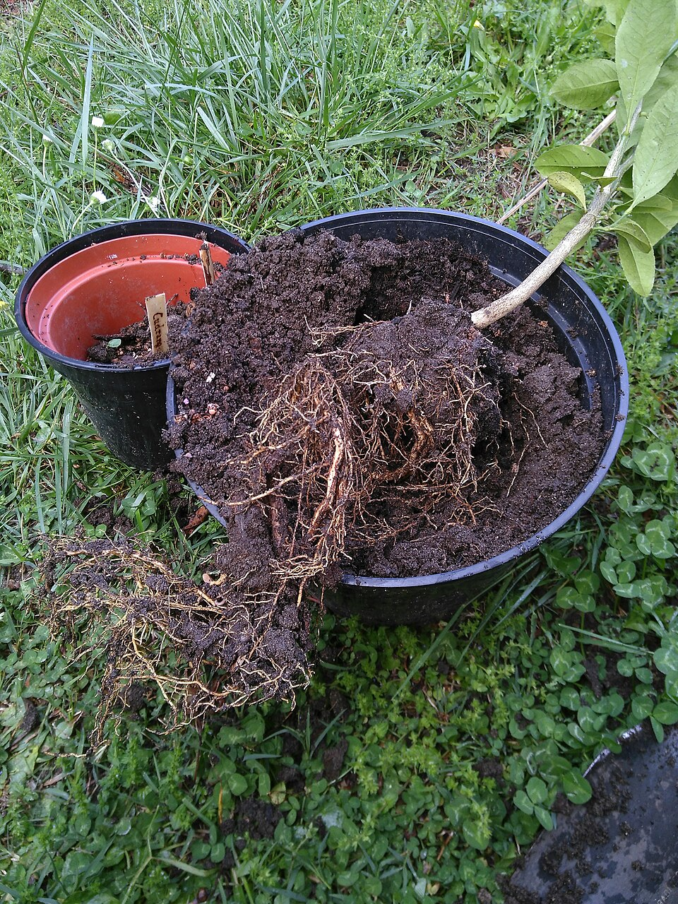

المملكة العربية السعودية — وزارة التعليم
كتاب العلوم — الجزء الأول من المقرر — طبعة ١٤٤٧ / ٢٠٢٥
حَاجَاتُ الْمَخْلُوقَاتِ الْحَيَّةِ
الصف الثاني الابتدائي
إعداد: نايف المطيري
موقع الدرس
أَيْنَ نَحْنُ فِي الْكِتَابِ؟ صفحات ٣٠ – ٣٥
الوحدة الأولى النباتات والحيوانات
الفصل الأول النباتاتصفحة ٢٨
الدرس الأول حاجات المخلوقات الحيةصفحات ٣٠ – ٣٥
سؤال الدرس: كَيْفَ أَعْرِفُ مَا إِذَا كَانَ الشَّيْءُ مَخْلُوقًا حَيًّا؟ (ص ٣٢)
الأهداف
أَهْدَافُ التَّعَلُّمِ مستخلصة من ص ٣٠ – ٣٥
فِي نِهَايَةِ الدَّرْسِ أَكُونُ قَادِرًا عَلَى أَنْ:
أَعْرِفَ أَنَّ الْمَخْلُوقَاتِ الْحَيَّةَ تَنْمُو وَتَتَغَيَّرُ. أَذْكُرَ حَاجَاتِ النَّبَاتَاتِ. أُبَيِّنَ كَيْفَ تَصْنَعُ النَّبَاتَاتُ غِذَاءَهَا. أَذْكُرَ وَظِيفَةَ الْجُذُورِ وَالسِّيقَانِ وَالْأَوْرَاقِ. أُعَرِّفَ الْأُكْسِجِينَ. التهيئة
أَنْظُرُ وَأَتَسَاءَلُ ص ٣٠ — سؤال الكتاب
مَا الْمَخْلُوقَاتُ الْحَيَّةُ فِي هَذِهِ الصُّورَةِ؟ كَيْفَ أَعْرِفُ ذَلِكَ؟
الصورة في الكتاب: غَزَالٌ فِي مَحْمِيَّةِ الْمَلِكِ خَالِدٍ الْمَلَكِيَّةِ .
معرفة سابقة
مَاذَا أَعْرِفُ مِنْ قَبْلُ؟ تمهيد تربوي
الْمَخْلُوقُ الْحَيُّ يَحْتَاجُ غِذَاءً وَمَاءً وَهَوَاءً
النَّبَاتُ لَهُ جُذُورٌ وَسَاقٌ وَأَوْرَاقٌ
الْحَيَوَانُ يَتَحَرَّكُ وَيَأْكُلُ
الْيَوْمَ كَيْفَ أُمَيِّزُ الْحَيَّ؟
توضيح إضافي: الْحَيَوَانُ يَظْهَرُ حَيًّا بِسُرْعَةٍ، أَمَّا النَّبَاتُ فَنَحْتَاجُ إِلَى مُرَاقَبَتِهِ.
المفردات
الْمُفْرَدَاتُ الْعِلْمِيَّةُ ص ٣٢ — مفردات الكتاب
الْبَادِرَةُ بَذْرَةٌ نَابِتَةٌ.
الْمَعَادِنُ أَجْزَاءٌ صُلْبَةٌ غَيْرُ حَيَّةٍ مِنَ التُّرْبَةِ.
الْأُكْسِجِينُ الْغَازُ الَّذِي يَتَنَفَّسُهُ الْإِنْسَانُ وَالْحَيَوَانُ لِيَعِيشَا.
الْمُفْرَدَاتُ الثَّلَاثُ كَمَا وَرَدَتْ فِي كِتَابِ الطَّالِبِ، صَفَحَاتُ ٣٢ وَ ٣٣ وَ ٣٤ وَ ٣٥.
الفكرة الرئيسة
السُّؤَالُ الْأَسَاسِيُّ ص ٣٢
كَيْفَ أَعْرِفُ مَا إِذَا كَانَ الشَّيْءُ مَخْلُوقًا حَيًّا؟
الْمَخْلُوقَاتُ الْحَيَّةُ تَنْمُو وَتَتَغَيَّرُ.
الشرح
كَيْفَ أَعْرِفُ أَنَّ الْحَيَوَانَ حَيٌّ؟ ص ٣٢ — نص الكتاب
مِنَ السَّهْلِ أَنْ نَحْكُمَ عَلَى الْحَيَوَانَاتِ أَنَّهَا مَخْلُوقَاتٌ حَيَّةٌ.
فَنَحْنُ نَرَاهَا:
تَتَحَرَّكُ
تَأْكُلُ الطَّعَامَ
تَشْرَبُ الْمَاءَ
تَتَنَفَّسُ الْهَوَاءَ تَأْكُلُ الْجَرَادَةُ أَزْهَارَ النَّبَاتِ. وَتَبْنِي الْبَطَّةُ عُشًّا لِصِغَارِهَا قَرِيبًا مِنَ الْبِرْكَةِ. (ص ٣٢)
الشرح
وَمَاذَا عَنِ النَّبَاتَاتِ؟ ص ٣٣ — نص الكتاب
النَّبَاتَاتُ أَيْضًا مَخْلُوقَاتٌ حَيَّةٌ.
وَلَكِنْ لَيْسَ مِنَ السَّهْلِ عَلَيْنَا مُلَاحَظَةُ ذَلِكَ.
نَحْتَاجُ إِلَى مُرَاقَبَةِ النَّبَاتَاتِ فَتْرَةً مُعَيَّنَةً؛ لِكَيْ نُلَاحِظَ أَنَّهَا تَنْمُو وَتَتَغَيَّرُ.
الشرح
حَاجَاتُ النَّبَاتَاتِ ص ٣٣ — نص الكتاب
تَحْتَاجُ النَّبَاتَاتُ لِكَيْ تَعِيشَ وَتَنْمُوَ إِلَى:
الْهَوَاءِ
الْمَاءِ
ضَوْءِ الشَّمْسِ
الْمَكَانِ الْمُنَاسِبِ
الْغِذَاءِ وَقَدْ مَكَّنَ اللَّهُ — سُبْحَانَهُ وَتَعَالَى — النَّبَاتَاتِ أَنْ تَصْنَعَ غِذَاءَهَا بِنَفْسِهَا.
سؤال من الكتاب
أَتَحَقَّقُ ص ٣٣
مَا الَّذِي تَحْتَاجُ إِلَيْهِ الْمَخْلُوقَاتُ الْحَيَّةُ لِكَيْ تَنْمُوَ؟
إظهار الإجابة إجابة نموذجية تَحْتَاجُ إِلَى الْهَوَاءِ وَالْمَاءِ وَالْغِذَاءِ وَالْمَكَانِ الْمُنَاسِبِ . وَتَحْتَاجُ النَّبَاتَاتُ أَيْضًا إِلَى ضَوْءِ الشَّمْسِ لِتَصْنَعَ غِذَاءَهَا.
أقرأ الشكل
نُمُوُّ النَّبَاتِ ص ٣٣ — شكل الكتاب
بَذْرَةٌ نَابِتَةٌ (بَادِرَةٌ)
نَبَاتٌ صَغِيرٌ
نَبَاتٌ مُكْتَمِلُ النُّمُوِّ نَبَاتُ تَبَّاعِ الشَّمْسِ يَسْتَغْرِقُ مُعْظَمَ أَشْهُرِ فَصْلِ الصَّيْفِ حَتَّى يَكْتَمِلَ نُمُوُّهُ. (ص ٣٣)
الشرح
كَيْفَ تَصْنَعُ النَّبَاتَاتُ غِذَاءَهَا؟ ص ٣٤ — نص الكتاب
خَلَقَ اللَّهُ لِلنَّبَاتَاتِ أَجْزَاءً تُسَاعِدُهَا عَلَى صُنْعِ الْغِذَاءِ.
تَحْتَاجُ النَّبَاتَاتُ إِلَى ضَوْءِ الشَّمْسِ وَالْهَوَاءِ وَالْمَاءِ وَالْمَعَادِنِ لِتَصْنَعَ غِذَاءَهَا.
الْمَعَادِنُ أَجْزَاءٌ صُلْبَةٌ غَيْرُ حَيَّةٍ مِنَ التُّرْبَةِ، تَمْتَصُّهَا النَّبَاتَاتُ فِي صُورَةِ أَمْلَاحٍ ذَائِبَةٍ.
محاكاة
مَصْنَعُ الْغِذَاءِ فِي النَّبَاتِ محاكاة لنص ص ٣٤ – ٣٥
أُشَغِّلُ أَوْ أُطْفِئُ:
O
النَّبَاتُ يَصْنَعُ غِذَاءَهُ، وَيُطْلِقُ الْأُكْسِجِينَ فِي الْهَوَاءِ.
أقرأ الشكل
دَوْرُ أَجْزَاءِ النَّبَاتِ ص ٣٤ — شكل الكتاب
الْجُزْءُ دَوْرُهُ فِي صُنْعِ الْغِذَاءِ الْأَوْرَاقُ تَأْخُذُ الْهَوَاءَ، وَتَسْتَخْدِمُ ضَوْءَ الشَّمْسِ لِتَصْنَعَ الْغِذَاءَ السَّاقُ تَدْعَمُ النَّبَاتَ، وَتَسْمَحُ لِلْمَاءِ وَالْغِذَاءِ بِالِانْتِقَالِ خِلَالَهُ الْجُذُورُ تُثَبِّتُ النَّبَاتَ فِي التُّرْبَةِ، وَتَأْخُذُ مِنْهَا الْمَاءَ وَالْأَمْلَاحَ الذَّائِبَةَ. وَبَعْضُهَا مَخْزَنٌ لِلْغِذَاءِ
سؤال من الكتاب
أَقْرَأُ الشَّكْلَ ص ٣٤
مَا دَوْرُ أَجْزَاءِ النَّبَاتِ الْمُخْتَلِفَةِ فِي صُنْعِ الْغِذَاءِ؟
إظهار الإجابة إجابة نموذجية الْأَوْرَاقُ تَأْخُذُ الْهَوَاءَ وَتَسْتَخْدِمُ ضَوْءَ الشَّمْسِ لِتَصْنَعَ الْغِذَاءَ.السَّاقُ تَدْعَمُ النَّبَاتَ وَتَسْمَحُ لِلْمَاءِ وَالْغِذَاءِ بِالِانْتِقَالِ خِلَالَهُ.الْجُذُورُ تُثَبِّتُ النَّبَاتَ وَتَأْخُذُ مِنَ التُّرْبَةِ الْمَاءَ وَالْأَمْلَاحَ الذَّائِبَةَ.
الشرح
الْأُكْسِجِينُ ص ٣٥ — نص الكتاب
عِنْدَمَا تَصْنَعُ النَّبَاتَاتُ الْغِذَاءَ تُطْلِقُ غَازًا فِي الْهَوَاءِ يُسَمَّى الْأُكْسِجِينَ .
الْأُكْسِجِينُ هُوَ الْغَازُ الَّذِي يَتَنَفَّسُهُ الْإِنْسَانُ وَالْحَيَوَانُ لِيَعِيشَا.
هَذِهِ النَّبَاتَاتُ تُنْتِجُ غَازَ الْأُكْسِجِينِ اللَّازِمَ لِحَيَاةِ الْإِنْسَانِ وَالْحَيَوَانِ.
سؤال من الكتاب
أَتَحَقَّقُ ص ٣٥
مَا الَّذِي تَحْتَاجُ إِلَيْهِ النَّبَاتَاتُ لِتَصْنَعَ الْغِذَاءَ؟
إظهار الإجابة إجابة نموذجية تَحْتَاجُ إِلَى ضَوْءِ الشَّمْسِ وَالْهَوَاءِ وَالْمَاءِ وَالْمَعَادِنِ الَّتِي تَمْتَصُّهَا فِي صُورَةِ أَمْلَاحٍ ذَائِبَةٍ فِي التُّرْبَةِ.
محاكاة التجربة
تَجْرِبَةُ وَرَقِ الْأَلُومِنْيُومِ محاكاة لنشاط «أستكشف» ص ٣١
الْيَوْمُ ٠
يَوْمٌ آخَرُ
أَرْفَعُ وَرَقَ الْأَلُومِنْيُومِ
إِعَادَة
ب
النَّبْتَةُ (ب) — مُغَطَّاةٌ سَلِيمَةٌ
أ
النَّبْتَةُ (أ) — مَكْشُوفَةٌ سَلِيمَةٌ
التُّرْبَةُ رَطْبَةٌ فِي الْأَصِيصَيْنِ، وَكِلْتَاهُمَا فِي مَكَانٍ مُشْمِسٍ.
نشاط استقصائي
أَسْتَكْشِفُ — الْأَدَوَاتُ ص ٣١ — نشاط الكتاب
سؤال النشاط: مَا الَّذِي تَحْتَاجُ إِلَيْهِ أَوْرَاقُ النَّبَاتَاتِ لِكَيْ تَعِيشَ؟
أَحْتَاجُ إِلَى:
نَبْتَتَيْنِ
وَرَقِ أَلُومِنْيُومٍ السلامة
قَبْلَ أَنْ نَبْدَأَ النَّشَاطَ تعليمات السلامة — ص ٧
أَغْسِلُ يَدَيَّ جَيِّدًا قَبْلَ النَّشَاطِ وَبَعْدَهُ. أَنْتَبِهُ عِنْدَ التَّعَامُلِ مَعَ وَرَقِ الْأَلُومِنْيُومِ؛ فَحَافَّتُهُ قَدْ تَكُونُ حَادَّةً. أَحْمِلُ الْأَصِيصَ بِكِلْتَا يَدَيَّ حَتَّى لَا يَسْقُطَ. أُخْبِرُ الْمُعَلِّمَ فَوْرًا عَنِ انْسِكَابِ الْمَاءِ أَوْ سُقُوطِ التُّرْبَةِ. نشاط استقصائي
أَسْتَكْشِفُ — الْخُطُوَاتُ ص ٣١ — الخطوات ١ – ٤
أَضَعُ نَبْتَتَيْنِ فِي مَكَانٍ مُشْمِسٍ، ثُمَّ أُغَطِّي أَوْرَاقَ إِحْدَاهُمَا بِوَرَقِ الْأَلُومِنْيُومِ. أُحَافِظُ عَلَى التُّرْبَةِ رَطْبَةً فِي الْأَصِيصَيْنِ. أَتَوَقَّعُ. مَاذَا يَحْدُثُ لِكُلٍّ مِنَ النَّبْتَتَيْنِ بَعْدَ أُسْبُوعٍ؟أُسَجِّلُ الْبَيَانَاتِ. أَكْتُبُ مَا أُلَاحِظُهُ خِلَالَ أُسْبُوعٍ.هَلْ كَانَتْ تَوَقُّعَاتِي صَحِيحَةً؟ مَا الَّذِي تَحْتَاجُ إِلَيْهِ الْأَوْرَاقُ؟ إجابة النشاط
الْخُطْوَةُ الرَّابِعَةُ ص ٣١
٤. هَلْ كَانَتْ تَوَقُّعَاتِي صَحِيحَةً؟ مَا الَّذِي تَحْتَاجُ إِلَيْهِ الْأَوْرَاقُ؟
إظهار الإجابة إجابة نموذجية مقترحة بَعْدَ أُسْبُوعٍ: النَّبْتَةُ الْمَكْشُوفَةُ (أ) بَقِيَتْ خَضْرَاءَ وَنَمَتْ، أَمَّا الْمُغَطَّاةُ (ب) فَاصْفَرَّتْ أَوْرَاقُهَا وَذَبَلَتْ.ضَوْءِ الشَّمْسِ وَالْهَوَاءِ لِتَصْنَعَ الْغِذَاءَ.
أستكشف أكثر
الْخُطْوَةُ الْخَامِسَةُ ص ٣١
٥. أَتَوَقَّعُ. مَاذَا يَحْدُثُ إِذَا رَفَعْتُ وَرَقَ الْأَلُومِنْيُومِ عَنْ أَوْرَاقِ النَّبْتَةِ الْمُغَطَّاةِ؟ أُلَاحِظُ النَّبْتَةَ مُدَّةَ أُسْبُوعٍ. هَلْ كَانَ تَوَقُّعِي صَحِيحًا؟
إظهار الإجابة إجابة نموذجية مقترحة أَتَوَقَّعُ أَنَّ الْأَوْرَاقَ سَتَعُودُ خَضْرَاءَ شَيْئًا فَشَيْئًا؛ لِأَنَّهَا صَارَتْ تَجِدُ ضَوْءَ الشَّمْسِ وَالْهَوَاءَ، فَتَعُودُ إِلَى صُنْعِ الْغِذَاءِ. وَبِالْمُلَاحَظَةِ خِلَالَ أُسْبُوعٍ يَتَبَيَّنُ صِدْقُ التَّوَقُّعِ.
محاكاة
حَيٌّ أَمْ غَيْرُ حَيٍّ… وَمَا الدَّلِيلُ؟ تدريب تفاعلي على نص ص ٣٢ – ٣٣
١ مِنْ ٦ الْإِجَابَاتُ الصَّحِيحَةُ: ٠
مَخْلُوقٌ حَيٌّ
غَيْرُ حَيٍّ
أَخْتَارُ، ثُمَّ أَعْرِفُ الدَّلِيلَ.
نشاط
نَشَاطُ الْكِتَابِ ص ٣٤ — نشاط الكتاب
أُلَاحِظُ نَبَاتًا لِأَرَى أَيَّ الْأَجْزَاءِ يَمْتَصُّ الْمَاءَ.
أَنْظُرُ إِلَى الْجُذُورِ فِي التُّرْبَةِ، وَأَتَتَبَّعُ صُعُودَ الْمَاءِ فِي السَّاقِ إِلَى الْأَوْرَاقِ.
تقويم الدرس
أُفَكِّرُ وَأَتَحَدَّثُ وَأَكْتُبُ — السُّؤَالُ الْأَوَّلُ ص ٣٥
١. أُقَارِنُ. فِيمَ تَتَشَابَهُ النَّبَاتَاتُ وَالْحَيَوَانَاتُ، وَفِيمَ تَخْتَلِفُ؟
إظهار الإجابة إجابة نموذجية تَتَشَابَهُ: كِلَاهُمَا مَخْلُوقَاتٌ حَيَّةٌ، تَنْمُو وَتَتَغَيَّرُ، وَتَحْتَاجُ إِلَى الْمَاءِ وَالْهَوَاءِ وَالْغِذَاءِ وَالْمَكَانِ الْمُنَاسِبِ.تَخْتَلِفُ: النَّبَاتَاتُ تَصْنَعُ غِذَاءَهَا بِنَفْسِهَا وَتَحْتَاجُ إِلَى ضَوْءِ الشَّمْسِ، وَهِيَ ثَابِتَةٌ فِي مَكَانِهَا. أَمَّا الْحَيَوَانَاتُ فَتَتَحَرَّكُ وَتَأْكُلُ طَعَامَهَا وَلَا تَصْنَعُهُ.
تقويم الدرس
السُّؤَالُ الثَّانِي ص ٣٥
٢. مَا وَظِيفَةُ كُلٍّ مِنَ الْجُذُورِ وَالسِّيقَانِ وَالْأَوْرَاقِ؟
إظهار الإجابة إجابة نموذجية الْجُذُورُ: تُثَبِّتُ النَّبَاتَ فِي التُّرْبَةِ، وَتَأْخُذُ مِنْهَا الْمَاءَ وَالْأَمْلَاحَ الذَّائِبَةَ، وَبَعْضُهَا مَخْزَنٌ لِلْغِذَاءِ.السِّيقَانُ: تَدْعَمُ النَّبَاتَ، وَتَسْمَحُ لِلْمَاءِ وَالْغِذَاءِ بِالِانْتِقَالِ خِلَالَهَا.الْأَوْرَاقُ: تَأْخُذُ الْهَوَاءَ، وَتَسْتَخْدِمُ ضَوْءَ الشَّمْسِ لِتَصْنَعَ الْغِذَاءَ.
تقويم الدرس
السُّؤَالُ الثَّالِثُ ص ٣٥
٣. السُّؤَالُ الْأَسَاسِيُّ. كَيْفَ أَعْرِفُ مَا إِذَا كَانَ الشَّيْءُ مَخْلُوقًا حَيًّا؟
إظهار الإجابة إجابة نموذجية أَعْرِفُ ذَلِكَ لِأَنَّ الْمَخْلُوقَ الْحَيَّ يَنْمُو وَيَتَغَيَّرُ ، وَيَحْتَاجُ إِلَى الْمَاءِ وَالْهَوَاءِ وَالْغِذَاءِ.
الْعُلُومُ وَالْفَنُّ (ص ٣٥): أَرْسُمُ لَوْحَةً تُوَضِّحُ كَيْفَ تَنْبُتُ الْبُذُورُ وَتَنْمُو، وَفِي أَيِّ اتِّجَاهٍ تَنْمُو الْجُذُورُ، وَفِي أَيِّ اتِّجَاهٍ تَنْمُو السَّاقُ وَالْأَوْرَاقُ.
تدريب إضافي
أَسْئِلَةٌ تَدْرِيبِيَّةٌ إِضَافِيَّةٌ من إعداد المعلم — ليست من الكتاب
١. مَا الْبَادِرَةُ؟
إظهار الإجابة الإجابة بَذْرَةٌ نَابِتَةٌ.
٢. مِنْ أَيْنَ يَأْخُذُ النَّبَاتُ الْمَعَادِنَ؟
إظهار الإجابة الإجابة مِنَ التُّرْبَةِ، فِي صُورَةِ أَمْلَاحٍ ذَائِبَةٍ فِي الْمَاءِ تَمْتَصُّهَا الْجُذُورُ.
الملخص
مَاذَا تَعَلَّمْتُ؟ خلاصة ص ٣٠ – ٣٥
الْمَخْلُوقَاتُ الْحَيَّةُ تَنْمُو وَتَتَغَيَّرُ. الْحَيَوَانَاتُ نَرَاهَا تَتَحَرَّكُ وَتَأْكُلُ وَتَشْرَبُ وَتَتَنَفَّسُ. النَّبَاتَاتُ مَخْلُوقَاتٌ حَيَّةٌ، وَنَحْتَاجُ إِلَى مُرَاقَبَتِهَا فَتْرَةً لِنُلَاحِظَ نُمُوَّهَا. تَحْتَاجُ النَّبَاتَاتُ إِلَى الْهَوَاءِ وَالْمَاءِ وَضَوْءِ الشَّمْسِ وَالْمَكَانِ الْمُنَاسِبِ وَالْغِذَاءِ. تَصْنَعُ النَّبَاتَاتُ غِذَاءَهَا بِضَوْءِ الشَّمْسِ وَالْهَوَاءِ وَالْمَاءِ وَالْمَعَادِنِ، وَتُطْلِقُ الْأُكْسِجِينَ. خريطة مفاهيم
أُرَتِّبُ أَفْكَارِي تنظيم لمحتوى الدرس
الْمَخْلُوقَاتُ الْحَيَّةُ
الْحَيَوَانَاتُ
تَتَحَرَّكُ تَأْكُلُ وَتَشْرَبُ تَتَنَفَّسُ الْأُكْسِجِينَ
النَّبَاتَاتُ
تَنْمُو وَتَتَغَيَّرُ تَصْنَعُ غِذَاءَهَا تُطْلِقُ الْأُكْسِجِينَ
تقويم ختامي
أَخْتَارُ الْإِجَابَةَ الصَّحِيحَةَ تفاعلي — أسئلة تدريبية
١. الْغَازُ الَّذِي يَتَنَفَّسُهُ الْإِنْسَانُ وَالْحَيَوَانُ هُوَ:
الْأُكْسِجِينُ الْمَعَادِنُ الْبَادِرَةُ
٢. الْجُزْءُ الَّذِي يَصْنَعُ الْغِذَاءَ فِي النَّبَاتِ هُوَ:
الْجُذُورُ الْأَوْرَاقُ السَّاقُ
٣. الْمَعَادِنُ هِيَ:
أَجْزَاءٌ صُلْبَةٌ غَيْرُ حَيَّةٍ مِنَ التُّرْبَةِ نَوْعٌ مِنَ النَّبَاتِ غَازٌ فِي الْهَوَاءِ
بطاقة الخروج
قَبْلَ أَنْ أُغَادِرَ الصَّفَّ تقويم ختامي
١ أَذْكُرُ حَاجَتَيْنِ لِلنَّبَاتِ.
٣ كَيْفَ أَعْرِفُ أَنَّ النَّبَاتَ حَيٌّ؟
أَكْتُبُ إِجَابَاتِي فِي بِطَاقَةٍ صَغِيرَةٍ وَأُسَلِّمُهَا لِلْمُعَلِّمِ.
إثراء اختياري
معرضٌ مصوَّر: ماذا تحتاج؟ إثراء اختياري الماء كلُّ مخلوقٍ حيٍّ يحتاج إلى الماء
الضوء النبات يحتاج الضوء ليصنع غذاءه
الغذاء يعطي الجسم طاقةً لينمو
مكانٌ للعيش فيه ما يحتاج إليه المخلوق
المخلوقات الحية تحتاج إلى ماءٍ وغذاءٍ وهواءٍ ومكانٍ تعيش فيه.
إثراء اختياري
هَلْ تَعْلَمُ؟ إثراء اختياري ١
كلُّ مخلوقٍ حيٍّ يحتاج إلى ماءٍ وغذاءٍ وهواء .
٢
النبات يحتاج إلى الضوء ليصنع غذاءه.
٣
لكلِّ مخلوقٍ مكانٌ يعيش فيه ويجد فيه حاجاته.
الحاجات الأربع: ماءٌ وغذاءٌ وهواءٌ ومكان.
إثراء اختياري
بِطَاقَاتُ الْمُفْرَدَاتِ — اضْغَطْهَا! إثراء اختياري الْبَادِرَةُ اضغط لترى المعنى
بَذْرَةٌ نَابِتَةٌ.
الْمَعَادِنُ اضغط لترى المعنى
أَجْزَاءٌ صُلْبَةٌ غَيْرُ حَيَّةٍ مِنَ التُّرْبَةِ.
الْأُكْسِجِينُ اضغط لترى المعنى
الْغَازُ الَّذِي يَتَنَفَّسُهُ الْإِنْسَانُ وَالْحَيَوَانُ لِيَعِيشَا.
إظهار كل المعاني
اضغط على البطاقة لترى المعنى.
إثراء اختياري
لُعْبَةٌ: رَتِّبْ بِالتَّرْتِيبِ الصَّحِيحِ إثراء اختياري ماء هواء غذاء مكانٌ للعيش
↻ إعادة الترتيب
رتِّب حاجات المخلوق الحي.
إثراء اختياري
الْعُلُومُ فِي حَيَاتِي إثراء اختياري في بيتي اسقِ نبتةً في بيتك كلَّ يومٍ أسبوعًا، وارسم كيف تغيَّرت.
فكِّر ماذا يحدث للنبتة إذا وُضعت في مكانٍ مظلم؟
🔎 إثراء مصوّر
عدسة العلوم ألاحظ · أتساءل · أفسّر
ما الذي تحتاج إليه هذه النبتة لتبقى حية وتنمو؟

🔍 تكبير الصورة جذور شتلة ليمون بعد إخراجها من الوعاء؛ تمتص الجذور الماء والأملاح من التربة. الصورة: Eiku · مصدر الصورة · CC BY-SA 4.0 · نسخة مصغرة دون تغيير المحتوى
👁️ تحتاج النباتات إلى الماء والهواء وضوء مناسب لتصنع الغذاء وتواصل نموها.
💡 تمتص الجذور الماء من التربة، وتحمل الساق الأوراق التي يصنع فيها النبات الغذاء.
🌱 تحتاج الحيوانات إلى الغذاء والماء والهواء ومكان مناسب؛ لكنها لا تصنع غذاءها مثل النباتات.
مراجع الإثراء للمعلم
🧩 رسم تفاعلي
أربع حاجات تساعد النبتة على النمو أربط الأفكار
اضغط عناصر الرسم لاكتشاف معناها والعلاقة بينها.
1 💧 ماء • 2 ☀️ ضوء • 3 🌬️ هواء • 4 🪴 مكان مناسب
تحتاج النبتة إلى توافر حاجاتها معًا.
🧪 مختبر الاستكشاف
غيّر ماء النبتة مع تثبيت الضوء أتوقّع · أجرّب · أقارن
كيف تبدو نبتة افتراضية إذا تغير الماء المتاح لها؟
الماء المتاح
قليل جدًا مناسب إغراق مستمر
▶ شغّل المحاكاة ↺ إعادة
الأيقونات ليست عدد أوراق، والاحتياج للماء يختلف بين النباتات؛ التجربة افتراضية.
مؤشر وصفي لامتلاء الأوراق
🍃 🍃 🍃 🍃 🍃 🍃 🍃 🍃 🍃 🍃
نقص الماء
أوراق أقل امتلاءً.
نقارن نباتات من النوع نفسه. مع ماء قليل جدًا تفقد الأوراق امتلاءها وقد تذبل.
توقّع النتيجة، ثم غيّر الحالة وشغّل المحاكاة.
🤔 لماذا لا يكون الماء الأكثر دائمًا هو الأفضل؟
انْتَهَى الدَّرْسُ إعداد: نايف المطيري
العلوم — الصف الثاني الابتدائي — الجزء الأول من المقرر
↺ البداية
▶ السابق
التالي ◀
إظهار كل الإجابات
⛶ ملء الشاشة
إعداد: نايف المطيري